广州市海珠区未来房价走势与消费者购房时机判断
首页信息
| 项目 | 内容 |
|---|---|
| 课程 | 数据分析与经济决策（ds2026） |
| 作业 | Team02 小组作业 |
| 小组 | 第一组（G01） |
| 主题 | 广州市海珠区未来房价走向，消费者今年购房是否合时？ |
| 决策主体 | 计划在广州市海珠区购房的自住型刚需与改善型消费者 |
| 日期 | 2026-05-24 |
摘要
本报告面向计划在广州市海珠区购房的消费者，围绕“2026 年是否适合在海珠区买房”这一决策问题展开。报告将从房地产政策环境、广州及海珠区市场热度、价格指数走势、典型楼盘事件、人口产业基本面和居民支付能力六个角度进行分析。综合判断是：海珠区呈现“产业强、人口偏弱、房价短期承压、板块中期分化”的特征；优质新盘热度明显上升，但这不等同于全区房价普涨。对自住需求明确、现金流稳定、能承受利率和资产流动性风险的消费者，今年可以重点关注核心地段和价格合理项目；对投资型或预算紧张型购房者，应保持谨慎。
1. 研究背景
近年来，房地产行业仍是中国宏观经济的重要组成部分，房地产开发投资、商品房销售、居民按揭贷款和地方土地财政都与宏观经济运行密切相关。为了稳定房地产市场，国家和地方陆续出台降低首付比例、降低房贷利率、优化限购、支持“以旧换新”等政策。
广州作为一线城市，房地产市场具有明显分化特征。海珠区位于广州中心城区，具备琶洲数字经济集聚区、珠江沿岸景观资源、老城生活配套和地铁通勤优势，因此在改善型需求中具有较强吸引力。2026 年 5 月，海珠区保利海韵项目出现开盘热销，也进一步提升了市场关注度。
1.1 政策时间线
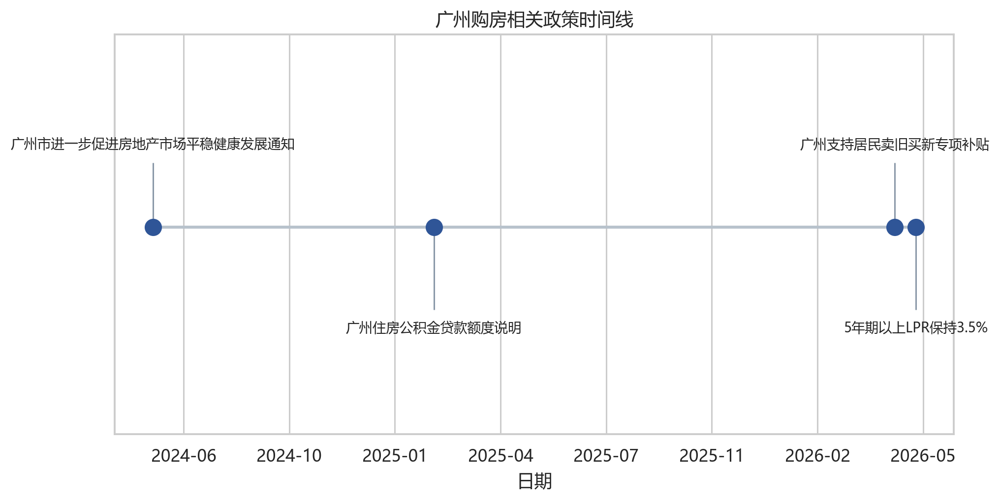
广州近期政策总体方向是降低购房门槛、支持改善置换、稳定市场预期。对消费者而言，政策利好主要体现在购房资格、首付比例、公积金额度和“卖旧买新”补贴等方面；但政策只能降低交易成本，不能消除房价波动和流动性风险。
2. 决策主体与核心问题
本报告的决策主体是计划在广州市海珠区购房的普通消费者，尤其是以下两类：
- 刚需自住者：关注通勤、居住稳定性、教育和生活配套。
- 改善型购房者：关注居住品质、资产置换、板块成长性和未来流动性。
核心问题包括：
- 当前政策是否明显降低购房成本？
- 广州房价指数是否出现企稳或反弹？
- 海珠区楼盘热销是否具有普遍代表性？
- 消费者今年买房、观望或暂缓的条件分别是什么？
3. 数据来源与获取方案
本报告采用五类数据证据：
第一，宏观与城市层面数据。使用国家统计局及 AkShare 获取全国房地产景气指标、广州新建商品住宅和二手住宅价格指数，并与北京、上海、深圳进行比较。
第二，广州和海珠区成交数据。使用广州市住建局“商品房销售统计信息”公开接口，整理 2026 年 5 月 19 日广州各区新建商品住宅可售、未售和签约数据；使用广州市房地产中介协会“一周独家数据”栏目，整理近 10 周广州市二手住宅网签宗数及海珠区相关文字说明。
第三，微观样本和案例。对链家、贝壳、58 同城、安居客、房天下等平台公开页面进行合规访问尝试；链家、贝壳、58 同城和安居客因登录、验证码或短壳页面未继续自动化采集，房天下公开列表可解析，整理 120 条海珠区挂牌样本；同时爬取主流新闻网站中关于保利海韵开盘热销的报道。
第四，用户补充平台样本。将小组补充的链家海珠二手房源 CSV 和贝壳海珠一手房 CSV 纳入项目，分别清洗出 30 条二手房挂牌样本和 31 条一手房项目/户型样本，用于与房天下样本、官方成交热度数据进行交叉说明。
第五，人口、产业与区域基本面补充数据。根据小组补充的《海珠区房价趋势分析报告》，整理广州及海珠区 2022-2025 年常住人口、户籍人口、海珠区 2025 年 GDP、固定资产投资、工业投资、房地产开发投资、社零总额、税收和“四上”企业新增情况，用于判断房价的中长期支撑与短期压力。
4. 数据获取可行性说明
4.1 AkShare
AkShare 可用于复现宏观和城市层面数据：
macro_china_new_house_price()：获取广州等城市新建商品住宅和二手住宅价格指数。macro_china_real_estate()：获取国房景气指数。
局限性是：AkShare 数据主要到城市层面，不能精确到海珠区，也不能直接反映单个楼盘成交情况。
4.2 链家和贝壳
链家/贝壳适合作为海珠区二手房挂牌样本和一手项目样本补充。本项目没有绕过平台登录、验证码或访问限制，而是采用用户补充 CSV 作为微观样本。报告中明确说明：挂牌价和平台参考价代表卖方报价、项目报价或平台展示信息，不等于真实成交价。
4.3 官方本地数据
广州本地数据应作为主证据，包括：
- 阳光家缘：一手住宅项目、网签和楼盘信息。
- 广州市房地产中介协会：二手住宅市场月度运行情况。
- 广州市住建局：政策文件和市场监管信息。
5. 指标设计
| 指标 | 含义 | 数据来源 |
|---|---|---|
| 新建商品住宅价格指数同比/环比 | 广州新房价格变化 | 国家统计局/AkShare |
| 二手住宅价格指数同比/环比 | 广州二手房价格变化 | 国家统计局/AkShare |
| 国房景气指数 | 全国房地产市场景气度 | AkShare |
| 海珠区挂牌单价 | 海珠二手房卖方报价 | 链家/房天下挂牌样本 |
| 海珠区一手项目参考价 | 海珠新房项目报价和总价带 | 贝壳一手房样本 |
| 开盘去化率 | 新盘热度 | 楼盘公开报道/阳光家缘 |
| 常住人口和户籍人口变化 | 潜在购房需求和人口吸附能力 | 广州市统计局、海珠区统计局、小组补充资料 |
| GDP、投资和企业新增 | 产业基本面对就业和购买力的支撑 | 海珠区统计局、小组补充资料 |
| 月供收入比 | 消费者支付压力 | 自行测算 |
5.1 分析意图：展示和演讲口径
为了便于展示，本报告把每类数据对应到一个清晰的演讲问题：先判断市场大环境，再判断海珠区自身基本面，最后落到普通消费者是否买得起、是否值得现在买。
| 数据模块 | 主要分析意图 | 展示时可使用的表达 |
|---|---|---|
| 政策时间线 | 判断购房门槛是否下降 | 这部分不是为了证明房价一定上涨，而是说明政策正在降低购房成本，给消费者提供入场条件。 |
| 广州新房和二手房价格指数 | 判断广州整体市场是否企稳 | 我们先看广州大盘，如果城市层面还没有明显反转，海珠区的热盘就不能简单理解为全区普涨。 |
| 一线城市价格指数对比 | 判断广州在一线城市中的相对强弱 | 把广州和北上深放在一起看，可以判断广州修复速度是领先、同步还是偏弱。 |
| 国房景气指数 | 判断全国房地产周期位置 | 这个指标用于提醒我们：海珠区再有优势，也仍然处在全国房地产调整周期的大背景下。 |
| 住建局新房签约数据 | 判断海珠新房成交热度是否真实存在 | 官方签约数据用来验证市场热度，不只依赖媒体报道或平台宣传。 |
| 中介协会二手网签数据 | 判断二手房市场是否也同步活跃 | 如果二手网签没有同步改善，就说明热度可能主要集中在少数新盘，而不是整个市场。 |
| 保利海韵案例 | 判断热销楼盘是否代表结构性机会 | 保利海韵说明核心区改善需求还在，但它更像一个优质项目案例，不能直接外推为全区上涨。 |
| 链家、贝壳和房天下样本 | 判断海珠一二手价格结构和板块分化 | 平台样本帮助我们看到消费者真正面对的报价区间，以及新房和二手房之间的选择差异。 |
| 人口和产业基本面 | 判断长期需求有没有支撑 | 人口数据看需求有没有新增，产业数据看未来购买力有没有来源，两者一起决定长期支撑是否扎实。 |
| 月供收入比测算 | 判断消费者今年买房是否承受得起 | 最后回到消费者本人：即使房价合适，如果月供压力过高，也不能算是合适的购房时机。 |
因此，本报告的展示逻辑可以概括为一句话：先看“市场有没有回暖”，再看“海珠有没有支撑”，最后看“消费者能不能承受”。这也对应最终结论：海珠区不是全面适合买入，而是对现金流稳定、目标明确的自住和改善家庭更适合结构性择优买入。
6. 人口、产业与趋势补充分析
附件补充数据将人口流入、产业新增和房价走势放在同一框架下，有助于解释为什么海珠区短期不宜简单判断为“全面上涨”，但中长期仍具备核心板块价值支撑。
6.1 人口基本面：全市流入强，海珠增长偏弱
| 指标 | 数据表现 | 对购房需求的含义 |
|---|---|---|
| 广州市常住人口 | 2025 年末 1910.10 万人，较 2024 年增加 12.30 万人 | 广州整体仍有较强人口吸引力，为核心城区提供长期需求底盘 |
| 海珠区常住人口 | 2025 年末 177.07 万人，较 2024 年仅增加约 0.08 万人 | 海珠人口恢复力度弱于全市，新增刚需支撑有限 |
| 海珠区户籍人口 | 2025 年末 112.08 万人，较 2024 年增加约 0.50 万人 | 可能反映购房落户、存量家庭稳定化和改善置换需求 |
| 海珠区非户籍人口推算 | 2025 年约 64.99 万人，低于 2022 年约 69.48 万人 | 外来常住人口有所收缩，租转买和新增刚需偏弱 |
人口数据说明，海珠区不是单纯依靠人口扩张推动房价的区域。其更可能依赖存量家庭改善、核心产业人群和优质资产稀缺性形成结构性需求。因此，人口因素对短期房价并非强支撑，而是中长期观察变量。
6.2 产业基本面：琶洲数字经济提供长期支撑
| 指标 | 2025 年表现 | 信号 |
|---|---|---|
| 海珠区 GDP | 3136.07 亿元，同比 +5.5% | 经济总量和增速具备中心城区支撑 |
| 第二产业增加值 | 545.28 亿元，同比 +9.5% | 工业和新型产业动能增强 |
| 第三产业增加值 | 2589.54 亿元，同比 +4.7% | 服务业仍是海珠经济主体 |
| 税收总额 | 356.01 亿元，同比 +8.4% | 财政和企业经营基础较稳 |
| 社会消费品零售总额 | 1051.41 亿元，同比 +11.8% | 消费活力较强，商业配套改善 |
| 固定资产投资 | 同比 +11.9% | 项目投资仍在扩张 |
| 工业投资 | 同比 +48.1% | 产业落地速度较快 |
| 房地产开发投资 | 同比 +19.0% | 同时意味着新房供给和去化压力增加 |
| 新增“四上”企业 | 2024 年 841 家，创历史新高 | 企业集聚增强，就业和高收入岗位有潜在支撑 |
琶洲试验区是海珠区最关键的长期变量。附件资料显示，琶洲围绕数字营销、数字文娱、数智美妆等赛道形成集聚，互联网/软件业营收增长较快，并叠加会展经济和总部经济。腾讯广州总部大楼竣工投产、头部企业集聚和“世界一流数字经济发展高地”等定位，均有利于提升核心板块的就业质量和购买力。
但产业增长不必然立即转化为房价上涨。关键问题在于：新增岗位是否形成稳定高收入家庭、这些人是否选择在海珠置业，以及一手高总价改善产品能否被本地购买力持续消化。
6.3 房价口径补充：一二手价格剪刀差明显
附件中整理的安居客、58 同城等平台口径显示，海珠区二手房展示均价在 2025 年下半年至 2026 年 5 月仍处调整区间。2026 年 5 月二手房均价约 39387 元/平方米，环比约 -0.24%，同比约 -12.13%；同期新房公示均价约 70119 元/平方米。
该口径与本报告的链家、贝壳、房天下样本并不完全一致，原因是平台覆盖楼盘、物业类型、挂牌时间和统计方法不同。但多个口径共同指向同一结论：海珠区新房和二手房之间存在明显价差，新房更多承载改善和高端项目，二手房则更能反映存量市场议价压力。
6.4 多空因素与阶段判断
| 方向 | 因素 | 对房价的作用 |
|---|---|---|
| 利多 | 琶洲数字经济、总部经济和会展经济持续集聚 | 支撑核心板块长期价值和改善需求 |
| 利多 | 广州整体人口仍在净流入 | 为中心城区提供长期需求底盘 |
| 利多 | 税收、社零和企业新增表现较强 | 增强区域就业、消费和财政基础 |
| 利空 | 全国房地产景气仍处低位 | 压制居民预期和资产价格弹性 |
| 利空 | 海珠常住人口增长偏弱、非户籍人口收缩 | 新增刚需不足，难以支撑全区普涨 |
| 利空 | 房地产开发投资增速较高 | 新房供应增加，去化压力和价格竞争可能上升 |
| 利空 | 二手房同比跌幅仍较大 | 存量房挂牌和议价压力尚未完全释放 |
阶段性判断如下：
- 短期 6-12 个月：海珠区房价仍以承压和跌幅收窄为主。若全国房地产景气指数未明显修复、二手房挂牌压力未下降，二手房均价仍可能在低位波动。
- 中期 1-3 年：更可能出现“核心板块企稳、非核心老旧小区继续调整”的分化格局。琶洲、滨江东、赤岗等产业和通勤优势明显的板块更容易率先企稳。
- 长期 3-5 年：若琶洲产业人口红利兑现，且高薪就业人群形成稳定购房需求，海珠核心板块有望进入产业驱动型修复；若人口继续外流，产业增长对房价的传导会被削弱。
7. 图表结果
- 广州新房与二手房价格指数走势。
- 广州与北上深房价指数对比。
- 国房景气指数走势。
- 广州住建局日度商品房销售数据。
- 广州市房地产中介协会二手住宅周度网签数据。
- 保利海韵主流新闻报道事实整理。
- 海珠区公开挂牌样本单价分布。
- 用户补充链家/贝壳样本一二手价格对比。
- 不同总价情景下首付和月供压力测算。
7.1 广州新房与二手房价格指数走势
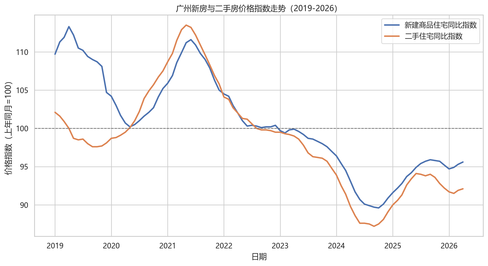
这张图用于判断广州整体房价是否已经企稳。若新房指数先于二手房指数改善，说明政策和新盘供给对市场预期有一定支撑；若二手房指数仍低于 100，则代表存量房市场仍有调整压力。
7.2 一线城市二手住宅价格指数对比
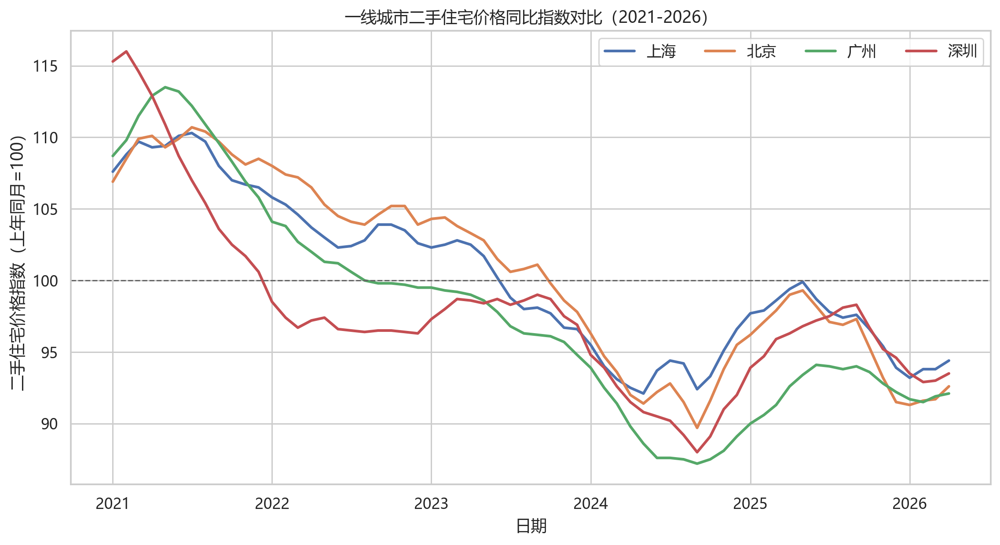
这张图用于判断广州在一线城市中的相对位置。如果广州二手房指数修复慢于北京、上海或深圳，说明广州市场仍偏弱；如果广州环比或同比改善更明显，则可作为市场情绪回升的证据之一。
7.3 国房景气指数
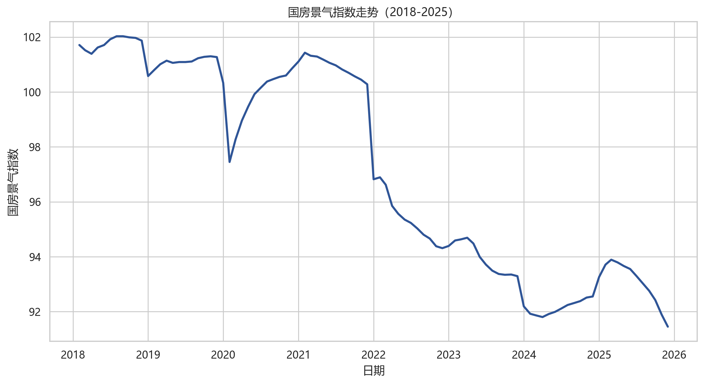
国房景气指数反映全国房地产行业景气程度。若指数仍处于低位，说明海珠区热盘热销更多体现为核心资产和优质项目的结构性机会，而不是全国房地产市场已经全面反转。
7.4 广州住建局日度商品房销售数据
本项目从广州市住建局“商品房销售统计信息”页面的公开接口获取每日数据。该页面说明数据为纳入网上签约管理范围的数据，用于观察广州各区新建商品房可售、未售与签约情况。
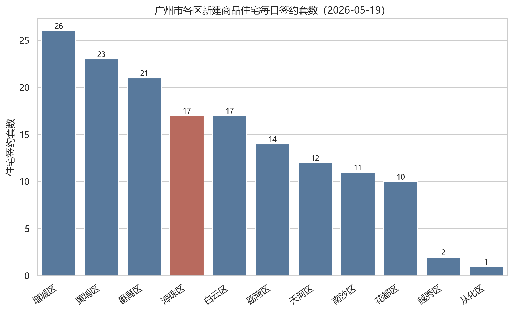
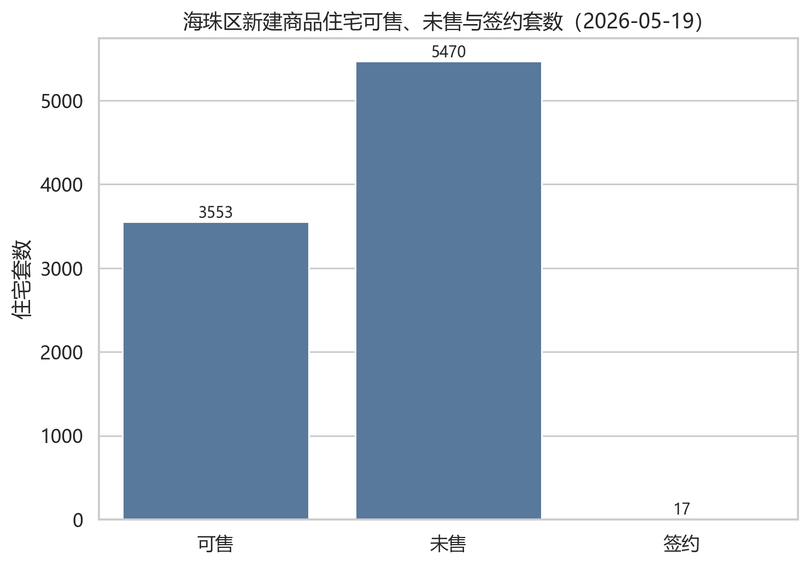
截至 2026 年 5 月 19 日，海珠区新建商品住宅当日签约 17 套、签约面积 1748.05 平方米；可售住宅 3553 套、未售住宅 5470 套。和增城、黄埔、番禺等区相比，海珠区当日签约规模处于中上位置，但仍不能仅凭单日数据判断持续性回暖。
7.5 广州市房地产中介协会二手住宅周度网签数据
本项目从广州市房地产中介协会“一周独家数据”栏目抓取近 10 周二手住宅网签数据。该栏目为周度市场观察，能够弥补官方日度新房数据无法反映二手住宅市场的问题。
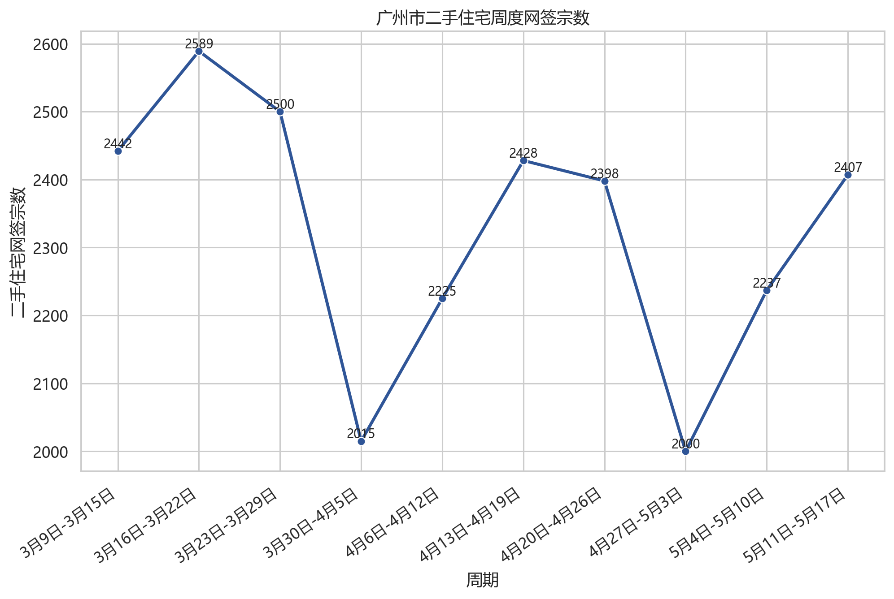
数据显示，2026 年 3 月中旬以来广州市二手住宅周度网签大多维持在 2000 宗以上；其中 5 月 11 日-5 月 17 日，全市二手住宅网签 2407 宗，协会正文提到“番禺区和海珠区的网签超过300宗”。这说明海珠区在二手住宅市场中同样具有一定成交活跃度，但周度波动仍较明显。
7.6 保利海韵案例：热销是结构性信号
本项目爬取并整理新浪财经、财联社/界面新闻、新快报、证券时报/证券日报、东方财富等公开报道。可验证信息显示，保利海韵位于海珠区南泰路/海珠西片区，2026 年 5 月 10 日首推约 300 套以上房源，多家媒体报道其短时间售罄，认购金额约 18 亿至 18.2 亿元，部分报道提到认筹超过 700 组。
这说明广州核心区改善需求仍然存在，优质新盘在政策支持和价格预期变化下能够快速去化。但保利海韵属于区位、价格、产品和营销叠加的个案，其热销更适合作为“优质项目结构性走强”的证据，而不是“海珠区全域房价全面上涨”的证据。
7.7 海珠区二手房公开挂牌样本
本项目尝试访问链家、贝壳、58 同城、安居客和房天下等公开页面。链家返回登录页，贝壳返回 CAPTCHA 页面，58 同城和安居客返回验证码或壳页面，因此没有继续自动化采集。房天下海珠区公开列表页可解析，本项目低频采集前 2 页共 120 条挂牌样本。
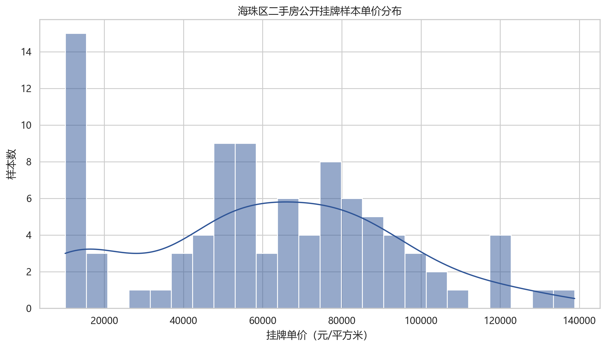
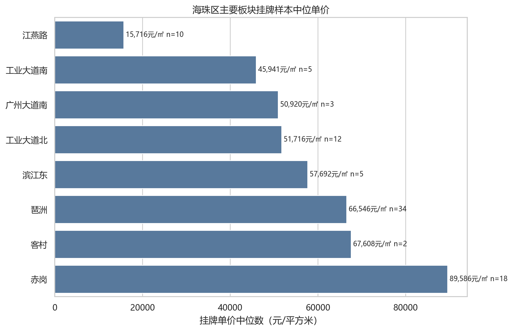
需要注意的是，该样本是公开挂牌价，不是网签成交价；样本中也包含公寓、别墅和非标准住宅产品，因此只能作为市场报价和板块分化的辅助证据。
7.8 用户补充链家/贝壳样本
小组补充的链家海珠二手房源 CSV 包含 30 条样本，字段包括房源 ID、小区/楼盘、挂牌总价、单价、建筑面积、户型、朝向、楼层、装修、建成年份和挂牌时间等。清洗结果显示，该样本的二手挂牌中位单价约 31692 元/平方米，中位总价约 262 万元，中位面积约 74.83 平方米。
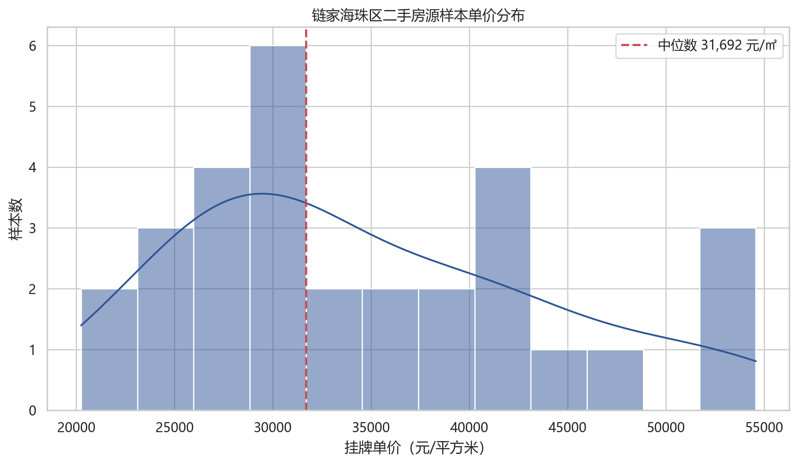
小组补充的贝壳海珠一手房 CSV 包含 31 条样本，字段包括楼盘、楼盘参考均价、总价参考、本套建筑面积、户型、朝向、地址和项目特色等。清洗结果显示，该样本的一手项目中位参考单价约 55000 元/平方米，中位参考总价约 575 万元，中位面积约 110 平方米。
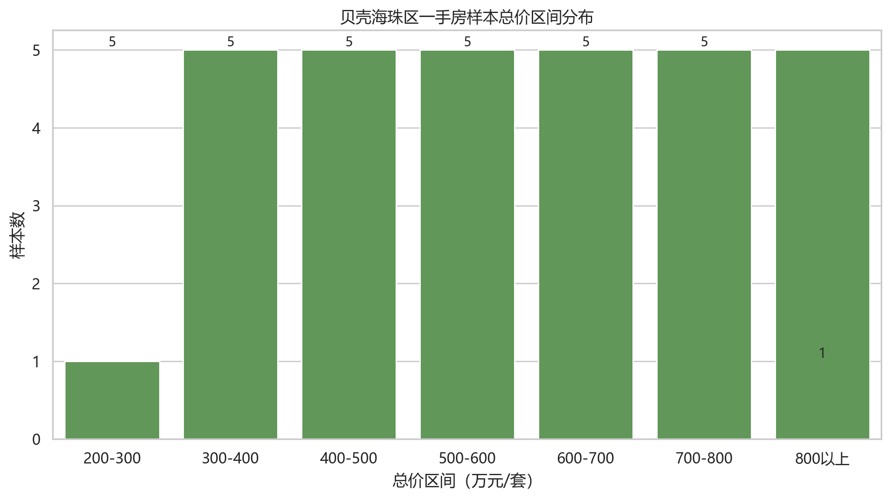
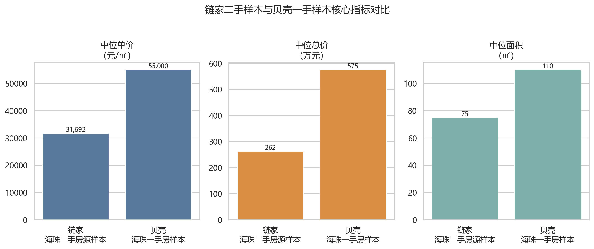
从样本对比看，一手项目的单价、总价和面积中位数均高于二手挂牌样本，说明海珠区消费者若选择新房改善项目，需要面对更高的总价门槛；若预算较紧，二手市场仍可能提供更低总价带的选择。但两份样本规模有限，且分别代表平台挂牌价和平台参考价，因此更适合作为价格结构和购房门槛的辅助证据。
7.9 购房支付能力测算
本报告采用等额本息、贷款 30 年、基准年利率 3.5% 的简化假设，测算不同总价住宅的月供压力。该测算不构成银行审批结果，仅用于消费者决策比较。
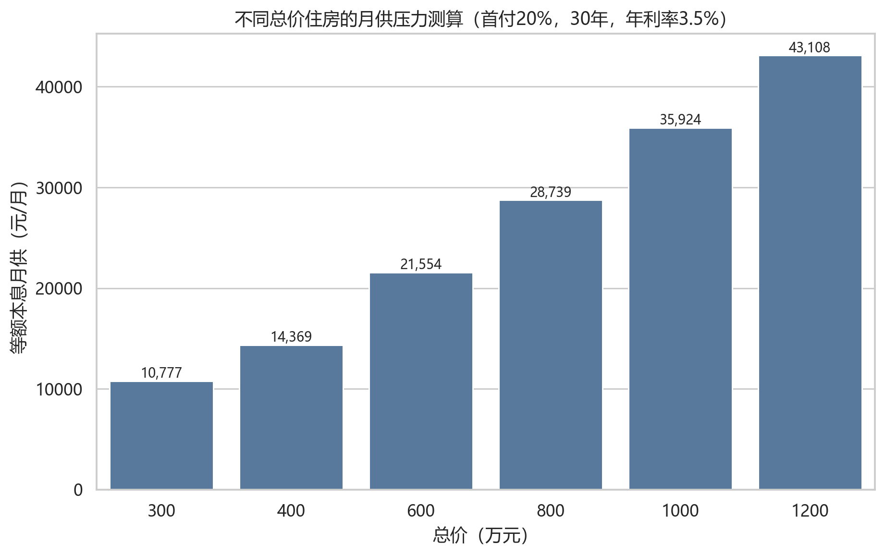
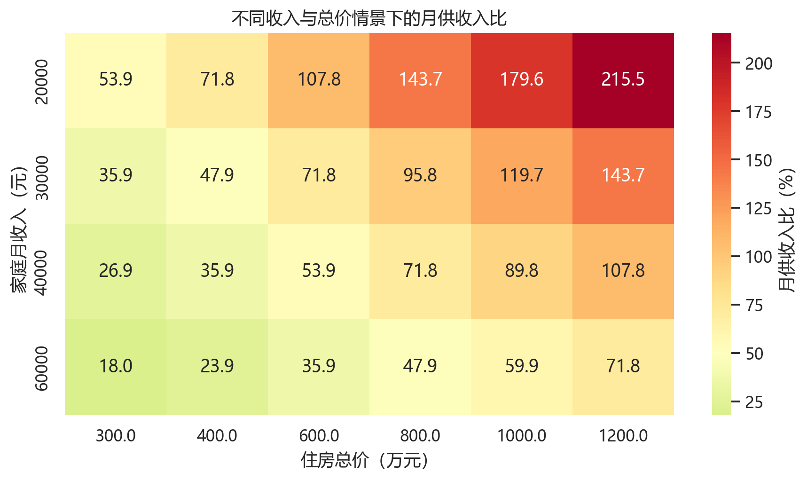
在首付 20%、年利率 3.5% 情景下，400 万总价住宅对应月供约 1.44 万元；600 万总价住宅月供约 2.16 万元。若家庭月收入为 3 万元，400 万住宅月供收入比约 47.9%，600 万住宅约 71.8%，已经进入较高压力区间。因此，“是否合时”不仅取决于房价走势，也取决于家庭现金流和风险承受能力。
8. 决策建议
| 消费者类型 | 今年购房判断 | 理由 |
|---|---|---|
| 刚需自住、预算稳定 | 可以积极看房、择优买入 | 政策降低成本，二手房议价空间仍在，自住需求不宜过度择时 |
| 核心板块改善型购房者 | 可以谨慎推进 | 琶洲、滨江东、赤岗等板块有产业和配套支撑，但需控制总价和置换周期 |
| 非核心老旧小区置业者 | 建议充分比价 | 人口支撑偏弱，老旧小区可能继续承压，应重点比较楼龄、地铁、学位和未来流动性 |
| 投资型购房 | 不建议作为主策略 | 房价弹性、租金回报和流动性均不确定，难以仅靠产业故事支撑投资收益 |
| 预算紧张、收入不稳定 | 建议暂缓 | 高总价区域月供压力大，需保留现金流安全边际 |
综合政策、价格指数、挂牌样本、人口产业基本面和支付能力测算，本报告建议把结论表述为“结构性适合买入”而不是“全面适合买入”。海珠区核心板块和优质新盘具备稀缺性，琶洲产业集聚也提供长期支撑；但人口新增偏弱、二手房仍有调整压力、房地产开发投资较快增长带来供给压力。消费者应以自住需求和现金流安全为主线，而不是根据单个热盘事件或产业概念追涨。
9. 局限性
- 海珠区微观成交价数据公开程度有限，贝壳/链家挂牌价和平台参考价不能直接代表成交价。
- 单个热销楼盘可能受到地段、价格、产品和营销影响，不能简单外推到全区。
- 房价走势受政策、利率、收入预期、土地供应和人口流动影响，预测具有不确定性。
- 人口、产业和平台均价补充数据来自小组整理资料，不同统计口径之间可能存在时间和样本差异，因此主要用于方向判断和交叉验证。
10. 参考资料
- 广州市住房和城乡建设局：商品房销售统计信息，https://zfcj.gz.gov.cn/zfcj/tjxx/spfxstjxx/index.html
- 广州市住房和城乡建设局：存量房交易登记统计信息，https://zfcj.gz.gov.cn/xysj/fwxx/clfjydjtjxx/index.html
- 广州市房地产中介协会：一周独家数据，https://www.gzrea.org.cn/website/website_scyj_scyjList.action?pdid=205
- 广州市统计局：广州市国民经济和社会发展统计公报
- 海珠区统计局：海珠区统计公报及主要经济指标简要分析
- 海珠区人民政府：海珠区经济运行情况公开信息
- 广州市人民政府：广州市进一步促进房地产市场平稳健康发展通知，https://www.gz.gov.cn/zwgk/fggw/sfbgtwj/content/mpost_9674048.html
- 广州市人民政府：广州住房公积金贷款额度说明，https://www.gz.gov.cn/zt/shb/content/mpost_10129232.html
- AkShare 宏观数据文档，https://akshare.akfamily.xyz/data/macro/macro.html
- 新浪财经/乐居财经：90秒售罄！保利海韵开盘“日光”，销售额18亿元，https://finance.sina.com.cn/stock/estate/zc/2026-05-10/doc-inhxmeai7686815.shtml
- 新浪财经/财经网：广州新政后首个“日光盘”诞生——保利海韵售罄，https://finance.sina.com.cn/roll/2026-05-11/doc-inhxnwmm1954255.shtml
- 财联社/界面新闻：广州楼市诞生新政后首个“日光盘”，300套房源两分半钟全部售罄，https://www.cls.cn/detail/2368514
- 新快报：穗八条后广州首现“日光”盘！保利海韵300余套房两分钟售罄，https://xxsb.gz-cmc.com/pages/2026/05/10/9316ee36c2ab4a1a9648ea36537b43c9.html
- 房天下广州海珠二手房公开列表，https://gz.esf.fang.com/house-a074/
- 用户补充链家海珠二手房源 CSV：
data/raw/lianjia_haizhu_secondhand_user.csv - 用户补充贝壳海珠一手房 CSV：
data/raw/beike_haizhu_newhome_user.csv - 小组补充基本面资料：
data/raw/haizhu_fundamental_supplement.md